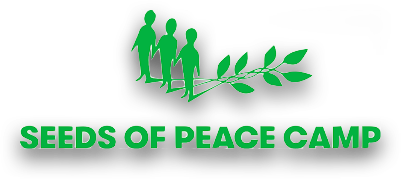
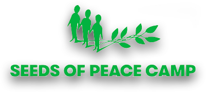

Seeds of Peace (SOP) is a camp in Maine that brings together young people and adults from regions of conflict — the Middle East (e.g. people from Israel, Palestine, Egypt, Jordan and folks from the US) and South Asia (e.g. India, Pakistan). They also run programs that focus on American cities experiencing cultural conflict and segregation between citizens and new immigrants (e.g. cities such as Portland, ME and Syracuse, NY).
At SOP, everyone wears the same thing, eats the same food, does camp activites (e.g. swimming in the lake, boating, ropes courses, etc.). In addition, everyone participates in dialogue sessions where they talk about the conflicts they're a part of with "their enemies."
I served as the American Delegation Leader one summer and particpated in SOP's program for adults. It was one of the most formative experiences of my life.
 
